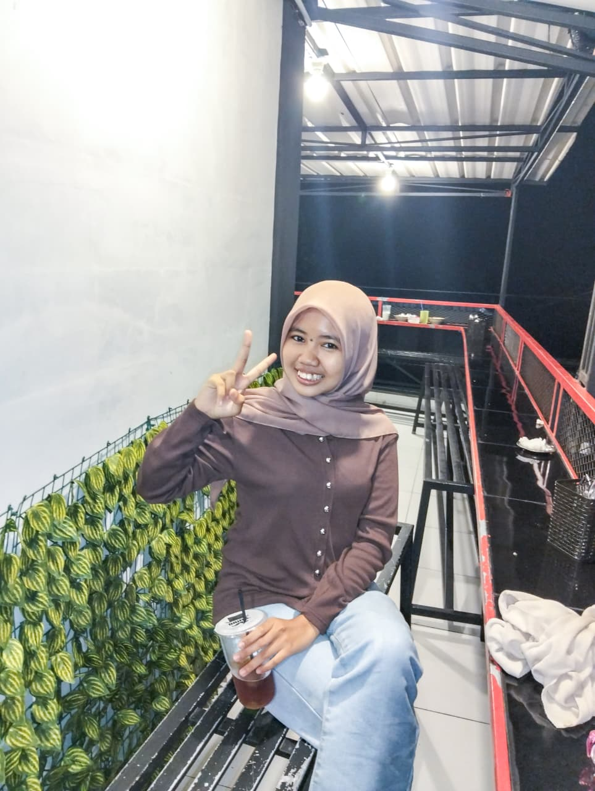

Mengubah Data Menjadi Solusi Digital
Halo, saya Fitri Rahmawati. Mahasiswa Universitas Komputama yang berfokus pada Analisis Sistem dan Pengembangan Web. Saya menciptakan solusi teknologi yang efisien dan estetis.

Profil Singkat
Pendidikan
Mahasiswa Semester 5 Sistem Informasi di Universitas Komputama.
Fokus
Analisis Sistem, Manajemen Data, dan Pengembangan Web Front-End.
Dominisili
Cilacap, Jawa Tengah, Indonesia. Siap bekerja remote.
Sebagai seorang yang berkomitmen di dunia teknologi, saya percaya bahwa efisiensi bisnis dimulai dari pengelolaan sistem dan data yang baik. Saat ini saya aktif mengembangkan skill pemrograman dan logika database untuk menciptakan aplikasi yang tidak hanya fungsional tetapi juga memberikan pengalaman pengguna yang luar biasa.
Kompetensi Teknis
Frontend Development
Tools & Design
Pengalaman & Organisasi
Himpunan Mahasiswa
Admin Media Sosial
Mengelola konten digital dan strategi komunikasi publik untuk meningkatkan engagement mahasiswa.
Badan Eksekutif Mahasiswa (BEM)
Staff Departemen
Aktif berpartisipasi dalam manajemen event kampus dan koordinasi antar divisi.
Proyek Unggulan
E-Commerce Perkuean
Website responsif untuk toko kue dengan fitur katalog interaktif dan integrasi pemesanan via WhatsApp.
Lihat DetailMarketplace Benih
Prototipe UI/UX untuk platform jual beli benih tanaman dengan desain modern dan user-friendly.
Lihat DetailSistem Pendaftaran Lomba
Aplikasi web untuk manajemen pendaftaran lomba dengan sistem validasi data dan ekspor CSV.
Lihat DetailDashboard UMKM
Dashboard sederhana untuk visualisasi data penjualan harian bagi pelaku usaha mikro.
Lihat DetailApa yang bisa saya bantu?
Hubungi Saya
Mari Terhubung
Tertarik untuk berkolaborasi atau punya pertanyaan? Jangan ragu untuk menghubungi saya melalui kontak di bawah ini.